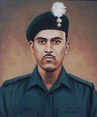

Abdul Hamid (SOLDIER)
1933 - 1965
The Great Indian Army Soldier
Company Quartermaster Havildar Abdul Hamid, PVC (1 July 1933 – 10 September 1965), was an Indian Army soldier who was posthumously given India's highest military decoration, the Param Vir Chakra, for his actions during the Indo-Pakistani War of 1965
Hamid joined the army in December 1954, and was posted to the 4th Battalion of the Grenadiers regiment. During the Sino-Indian War, his battalion participated in the battle of Namka Chu against the People's Liberation Army.
Biographies
- He joined the Grenadiers regiment of the Indian Army on 27 December 1954.
- He served with the battalion in Agra, Amritsar, Jammu and Kashmir, Delhi, NEFA and Ramgarh.
- During the Sino-Indian War of 1962, Hamid's battalion was part of the 7th Infantry Brigade commanded by Brigadier John Dalvi and participated in the Battle of Namka Chu against the People's Liberation Army.
- Company Quartermaster Havildar Abdul Hamid kept on firing on yet another enemy tank with his recoilless gun. While doing so, he was mortally wounded by an enemy high explosive shell.
- Havildar Abdul Hamid’s brave action inspired his comrades to put up a gallant fight and to beat back the heavy tank assault by the enemy.
- Awards:
- Param Vir Chakra
- Samar Seva Medal
- Raksha Medal
- Sainya Seva Medal